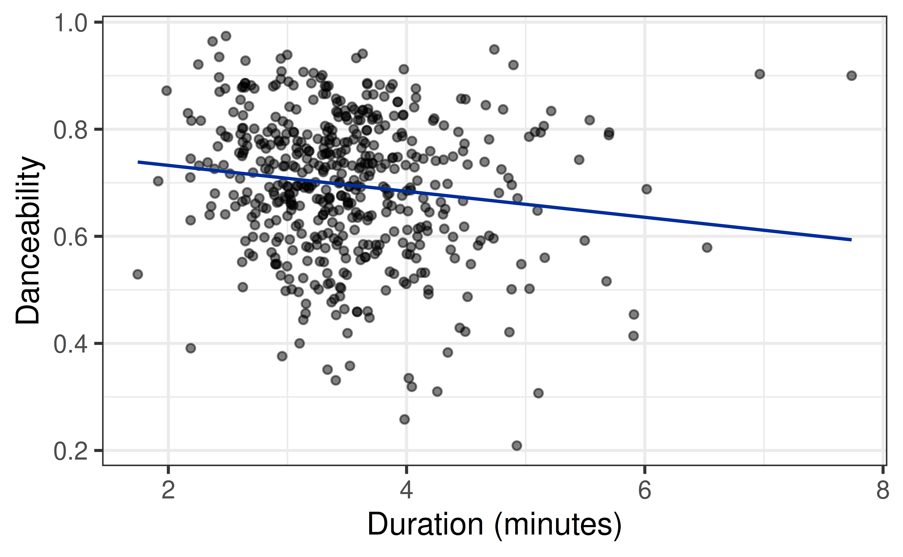
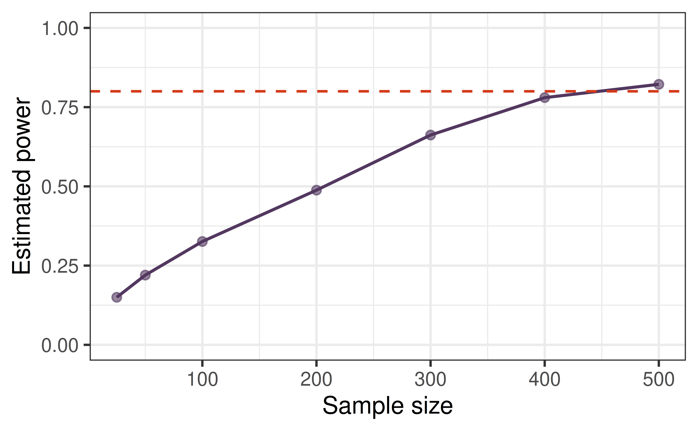
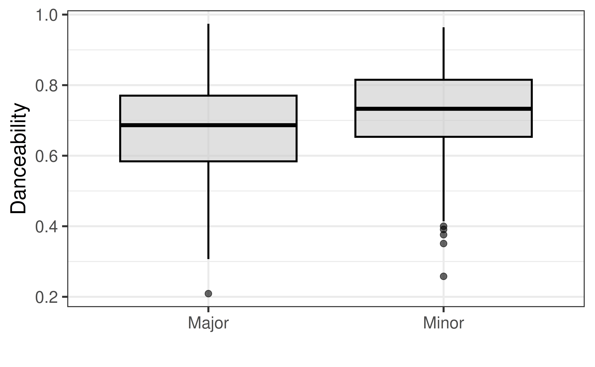

| term | estimate | std.error | statistic | p.value |
|---|---|---|---|---|
| (Intercept) | 0.7809 | 0.0275 | 28.3506 | 0.0000 |
| duration_min | -0.0242 | 0.0077 | -3.1510 | 0.0017 |
Effect Size and Power
Is it real? Is it big? Could we have seen it?
Prof. Eric Friedlander
Where we are
Last week was Exam 1, so we never finished the activity from Lecture 11. Today:
- A quick refresher on testing the slope.
- Time to finish AE 11.
- Decisions and errors: what can go wrong when we test?
- Power: how likely are we to detect a relationship that really exists?
- Effect size: how big is a relationship, not just whether it is detectable?
Refresher: testing a slope
The setup
We have data on 508 of the most popular songs on Spotify. Does a song’s duration help predict its danceability?

The five steps
- Choose a statistic that captures the question: the slope \(\hat{\beta}_1\).
- Hypotheses: \(H_0: \beta_1 = 0\) (no linear relationship) vs. \(H_A: \beta_1 \neq 0\).
- Null distribution: what slopes do we get if there is no relationship? We built it by shuffling. It is normal, centered at 0, with spread \(SE_{\hat{\beta}_1}\).
- Standardize: \(t = \dfrac{\hat{\beta}_1 - 0}{SE_{\hat{\beta}_1}}\), compared to a \(t\) distribution with \(n - 2\) degrees of freedom.
- Conclude: the p-value is the probability of a statistic at least this extreme if \(H_0\) is true.
In R
- What is the test statistic for the slope? What does it mean in words?
- What is the p-value, and what is your conclusion in context?
Activity
- Get back into your groups and use the same predictor you were assigned and finish the Activity.
- We will pick back up at the countdown. Keep your AE 11 model, because we will use it again.
Decisions and errors
From a p-value to a decision
So far we have reported a p-value. Often a test ends with a decision.
- Choose a significance level \(\alpha\) ahead of time (usually \(0.05\)).
- If p-value \(< \alpha\): reject \(H_0\). The data provide convincing evidence for \(H_A\).
- If p-value \(\geq \alpha\): fail to reject \(H_0\). The data do not provide convincing evidence for \(H_A\).
- We never “accept” \(H_0\). Courtroom: \(H_0\) is “innocent,” and “not guilty” is not the same as “innocent.”
For the duration model, the p-value is 0.0017. With \(\alpha = 0.05\), what is our decision?
Nothing magical happens at \(\alpha\)
- A p-value of \(0.049\) and a p-value of \(0.051\) are essentially the same amount of evidence, yet they lead to opposite “decisions.”
- \(0.05\) is a convention, not a law of nature.
- Evidence is a continuum. Report the p-value, the estimate, and a confidence interval, not just “significant” or “not significant.”
So why bother with decisions at all? Because they let us ask: how often will we be wrong?
What can happen?
What are the four possible outcomes of a test?
| Reject \(H_0\) | Fail to reject \(H_0\) | |
|---|---|---|
| \(H_0\) is true (no relationship) | Type I error (false positive) | Correct |
| \(H_0\) is false (real relationship) | Correct | Type II error (false negative) |
Types of error
- Type I error: rejecting \(H_0\) when it is true. \(P(\text{Type I}) = \alpha\), so we choose how often this happens.
- Type II error: failing to reject \(H_0\) when it is false. \(P(\text{Type II}) = \beta\) is harder to control: it depends on how big the real effect is, how much data we have, and how noisy the data are.
- Trade-off: lowering \(\alpha\) makes Type I errors rarer but Type II errors more common.
In a courtroom, which error is worse: convicting an innocent person or acquitting a guilty one? Is the same error always worse in science? Think about screening for a disease vs. approving a new drug.
Power
Statistical power
The bottom-left cell of our table is the one we usually want. Power is the probability that a test correctly rejects \(H_0\) when there really is an effect of a given size: \(\text{power} = 1 - P(\text{Type II error})\).
Power depends on:
- Sample size: more data means more power
- Significance level \(\alpha\): a more lenient \(\alpha\) means more power (and more false positives)
- Variability in the data: less noise means more power
- Effect size: bigger effects are easier to detect
Let’s Explore The Idea
Estimating power by simulation
We can’t know the true population slope, so a common trick is to assume the effect we saw is real and ask: if we repeatedly drew new samples of a given size, how often would we detect it?
Here we treat our 508 songs as the “population” and resample n = 50 of them:
Another sample
| term | estimate | std.error | statistic | p.value |
|---|---|---|---|---|
| (Intercept) | 0.7191 | 0.0784 | 9.1680 | 0.0000 |
| duration_min | -0.0046 | 0.0216 | -0.2118 | 0.8331 |
How do the estimate and p-value differ from the previous sample? Did both samples detect the relationship at \(\alpha = 0.05\)?
Ten samples
# A tibble: 10 × 7
term estimate std.error statistic p.value .row .index
<chr> <dbl> <dbl> <dbl> <dbl> <int> <dbl>
1 duration_min -0.0802 0.0292 -2.74 0.00855 1 1
2 duration_min 0.00693 0.0254 0.273 0.786 1 2
3 duration_min 0.0469 0.0337 1.39 0.171 1 3
4 duration_min -0.00473 0.0235 -0.202 0.841 1 4
5 duration_min -0.0390 0.0290 -1.35 0.185 1 5
6 duration_min -0.104 0.0323 -3.23 0.00224 1 6
7 duration_min 0.0249 0.0182 1.37 0.176 1 7
8 duration_min -0.0606 0.0274 -2.21 0.0318 1 8
9 duration_min -0.0758 0.0320 -2.37 0.0219 1 9
10 duration_min -0.0490 0.0257 -1.90 0.0628 1 10In how many of these 10 samples was the p-value below 0.05?
One thousand samples
(p.value < 0.05)
TRUE FALSE
0.226 0.774 With 50 songs, we would detect the duration effect only about 23% of the time. That is the power of a test with \(n = 50\), if the effect we saw is real.
Power grows with sample size

The dashed line marks the common target of 80% power.
Effect size matters too

Same songs, same sample sizes. Why does one predictor reach 80% power with so few songs while another needs far more?
Because the relationships differ in effect size. So what is an effect size?
Effect size
Statistically detectable. So what?
For duration, the p-value is 0.0017: strong evidence of a relationship.

Looking at the picture, how useful is duration for predicting danceability? How much of the variation does it explain?
Detectable is not the same as big
| r.squared | p.value | nobs |
|---|---|---|
| 0.0192 | 0.0017 | 508 |
- \(R^2 =\) 0.019: duration explains about 1.9% of the variation in danceability (the same quantity as PRE).
- Yet the p-value is tiny. Why? Because we have 508 songs.
- Statistical significance answers: is there evidence of any relationship at all?
- Effect size answers: how big is the relationship, compared to the variability in the data?
What is an effect size?
An effect size measures how big a relationship is relative to the noise in the data.
- It does not depend on the sample size (other than ordinary sampling variability).
- The p-value does depend on the sample size: more data pushes p-values down, even when the effect is tiny.
Two measures you can already compute:
| Situation | Effect size | Meaning |
|---|---|---|
| Quantitative predictor | \(R^2\) (PRE) | Fraction of variation in \(Y\) explained |
| Two groups | Cohen’s \(d = \dfrac{\bar{y}_1 - \bar{y}_2}{s_{pooled}}\) | Difference in means, in SD units |
- Warning: the noise or sd we refer to is of the data not the sampling distribution (i.e. not the standard error)
A Warning On Effect Size
Different communities the use statistics can frequently mean different things when they say effect size:
- Everyone usually means “Is the size of my coefficient large?” (in this case the raw slope would be considered a measure of effect size)
- Most statisticians mean “Is the size of my coefficient large compared to my variation?” (This is the definition we will use in class)
- Note that this definitions requires two things: a measure of the raw size and a measure of the variability
How does \(R^2\) include both of these measure in it?
Cohen’s \(d\) for two groups
Songs in a major key (mode = 1) vs. a minor key (mode = 0):

Major keys average 0.048 units lower in danceability: \(d \approx\) -0.37, about a third of an SD.
Practice
For each of the following questions, tell me whether you should answer it using a p-value, an effect size, or both:
- Is there convincing evidence that the key a song is in explains any of the variation in a songs danceability?
- Do I sell more cups of coffee in the park or in the business district?
- Is the increase in the number of cups of coffee I sell meaningful?
- Is the type of music an important predictor in the number of cups of coffee I sell?
- How price sensitive are coffee consumers?
Rules of thumb
- There are general guidelines for what makes a large effect size (you can google them).
- What counts as a meaningful effect depends on the problem. So I will not present them.
Comparing predictors
Each AE 11 group used a different predictor of danceability:
| predictor | r.squared | p.value |
|---|---|---|
| valence | 0.139 | 0.0000 |
| acousticness | 0.030 | 0.0001 |
| tempo | 0.022 | 0.0008 |
| loudness | 0.017 | 0.0036 |
| liveness | 0.007 | 0.0616 |
| energy | 0.002 | 0.3299 |
Match these \(R^2\) values to the power curves we just saw. Will increasing effect size always decrease the p-value?
Two pitfalls
Caution
Large samples. With enough data, the test will reject \(H_0: \beta_1 = 0\) even when the predictor has a very small effect.
- Consider practical significance, not just statistical significance.
- Instead of “statistically significant,” say statistically detectable.
Caution
Small samples. With little data, there may not be enough evidence to reject \(H_0\) even when the relationship is real.
- When you fail to reject \(H_0\), don’t conclude that there is no relationship.
- Absence of evidence is not evidence of absence.
Power in practice
Power analysis is most useful before collecting data:
- Decide on the smallest effect you would care about (this is a judgment about practical significance, not a statistics question).
- Use simulation (or a formula) to find the sample size that gives about 80% power for that effect.
- Collect that much data.
Caution
Power computed from the effect you already observed only tells you how your study behaved. It is not a guarantee about a future study, because the observed effect is itself a noisy estimate.
Activity
- Stay in your AE 11 groups and keep your AE 11 predictor.
- Compute the effect size of your model and compare with other groups.
- Estimate the power of your test at several sample sizes.
Recap
- A test ends in a decision: reject or fail to reject \(H_0\). But evidence is a continuum, and nothing magical happens at \(\alpha\).
- Four outcomes: a Type I error (probability \(\alpha\)), a Type II error, and two correct decisions.
- Power is the probability of detecting a real effect. It increases with sample size and effect size.
- A small p-value says a relationship is detectable. It doesn’t say the relationship is big.
- Effect size (\(R^2\), Cohen’s \(d\)) measures how big a relationship is relative to the noise, and doesn’t grow with \(n\). What counts as meaningful depends on context.
- With a huge sample, ask whether the effect matters. With a small sample, remember that failing to reject \(H_0\) is not proof of no relationship.